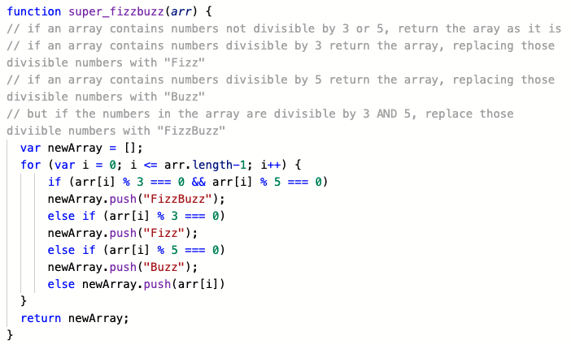

JavaScript Problem Solving.
“Problem Solving” – famously not the sexiest string of words, but an inevitability in JavaScript, and as such it is something that should be approached with enthusiasm and a full tool kit.
I encountered a good breadth of problems this week in coding world, but one that stuck out was the industry standard “FizzBuzz”. FizzBuzz and its variations are common challenges in JavaScript, which essentially ask the coder to convert numbers within an array to words (like “Fizz”) when said numbers meet certain conditions (for example being a multiple of 3).
While that’s a relatively simple request, I felt pretty challenged when I realised I’d need to achieve this in what is essentially a new language. I went to my tool box and first equipped myself with a mindful frame of view - focused on the challenge, aware probelems are very much "what we do", I was ready to get going. (See also,
this blog post which touches on mindfulness at Dev Academy.)
In this instance what worked most for me is pseudocode. This is the process of writing indented lines of non-code in plain english, stating the steps you will be taking or explaining the processes a function goes through. Breaking it down in plain english aided me in seeing exactly what steps I’d need to convert to code. To double down on this I explained to my roommates what I would be doing. This is a variation of the “rubber ducky” method, which is essentially to explain your process and plan out loud. I knew the individual functions that needed to be written, so the FizzBuzz challenge was completed by Googling the functions I wasn’t sure exactly how to write and finally refactoring the code so that it ran through in a logical clear order.

Psuedocoding the FizzBuzz.
There are some other problem solving methods not covered above, some of these came into play in small ways, and others have been more useful in other instances:
- Trying something - just typing out what you think will work and seeing how it runs.
- Reading error messages - these often leave clues on what you have done wrong, and has worked great for me in conjunction with the ‘trying something’ above.
- Console.logging - you can console log out pretty much anything to have it show in the corresponding inspector window in Chrome. This has been really useful when the elements of a challenge aren’t immediately clear, I was able to pull them out into the inspector and get a better understanding of what I was working with.
- Asking peers & coaches for help - this is invaluable and easy as we work in an open learning environment and are committed to enhancing each other’s learning. If you’re doing this it is good to try other problem solving steps on your own first, and explain clearly what you have done and what you do understand. This helps your peers help you.
- Improving the process with reflection - at the end of the day it's helpful not just to refactor your code, but also to reflect on which of your approaches worked well so they can be applied more effectively next time. I also looked at how others solved similar challenges so that I could learn from their strategies.
Working through the above I learnt that problems in code are not bad things, they are totally normal. They should be expected, then approached with joy, taking pleasure in knowing the tools you have will get you closer and closer to the answer you’re looking for.